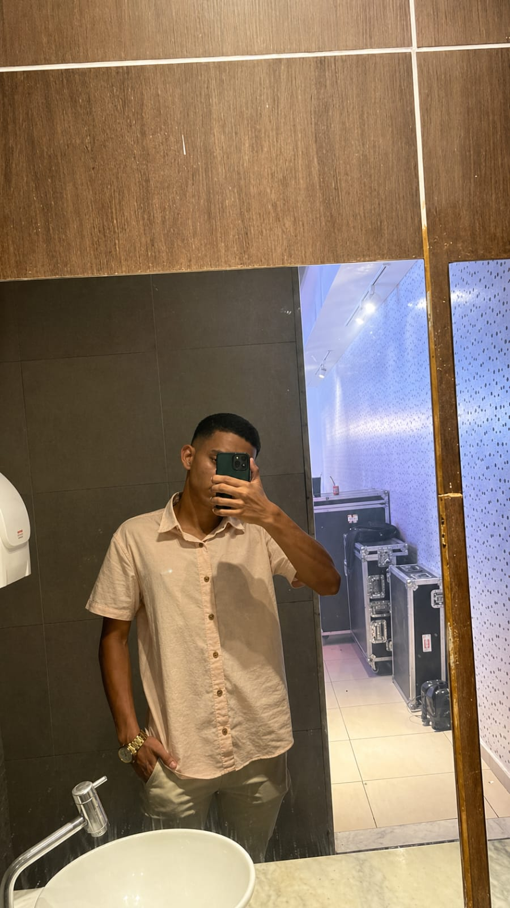
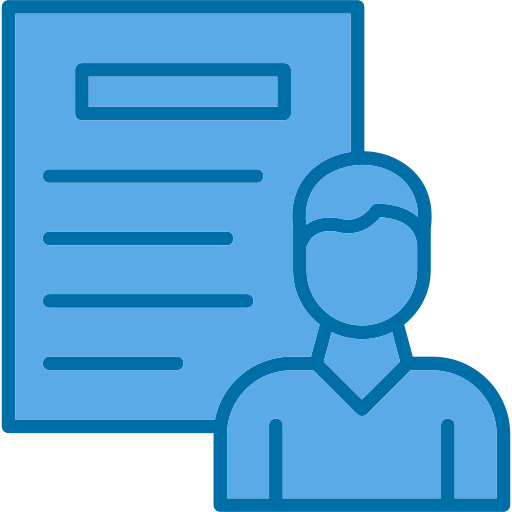
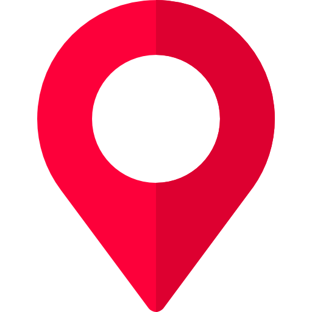

SOBRE MIM
Tenho 18 anos e atualmente estou cursando o ensino médio, enquanto construo minha trajetória na área de desenvolvimento com foco em me tornar um desenvolvedor Full Stack. Já não me considero mais alguém que está apenas começando, mas sim em constante evolução, buscando aprofundar meus conhecimentos e desenvolver habilidades práticas que me aproximem do nível profissional.
Tenho interesse em diversas áreas da programação, especialmente desenvolvimento web, bots e automação. Gosto de explorar como a tecnologia pode ser usada para resolver problemas do dia a dia e criar soluções eficientes, seja através de interfaces bem estruturadas ou sistemas automatizados que otimizam tarefas. Essa versatilidade é algo que valorizo, pois me permite enxergar o desenvolvimento de forma mais ampla e estratégica.
Atualmente, estudo HTML e CSS com foco na criação de interfaces modernas, organizadas e responsivas, sempre buscando melhorar a experiência do usuário e a qualidade visual dos projetos. Também utilizo Git e GitHub como ferramentas essenciais no meu fluxo de trabalho, entendendo a importância do versionamento e da organização de código desde cedo. Me preparo para avançar para o JavaScript, com o objetivo de tornar minhas aplicações mais dinâmicas e interativas, além de evoluir para o desenvolvimento completo de aplicações web.
Meu aprendizado é baseado em uma combinação de prática e teoria, utilizando recursos como YouTube, documentação oficial e repositórios no GitHub. Gosto de aprender construindo, testando e ajustando projetos, o que me ajuda a fixar melhor o conteúdo e desenvolver autonomia. Tenho facilidade em aprender novos conceitos e procuro sempre entender não só o “como”, mas também o “porquê” das coisas.
Mesmo conciliando os estudos com a rotina escolar, mantenho uma dedicação consistente, estudando cerca de 3 horas por dia sempre que possível. Sou uma pessoa determinada, com mentalidade de crescimento, e estou constantemente buscando evoluir tanto tecnicamente quanto profissionalmente.
Meu objetivo é atuar de forma remota, trabalhar em uma empresa de tecnologia e também realizar projetos freelance, adquirindo experiência prática e contribuindo para soluções reais. Estou comprometido em me desenvolver continuamente e construir uma carreira sólida na área, sempre buscando entregar resultados cada vez melhores.


Nome: Felipe Idade: 18 anos
Idade: 18 anos

Localização: Brasil